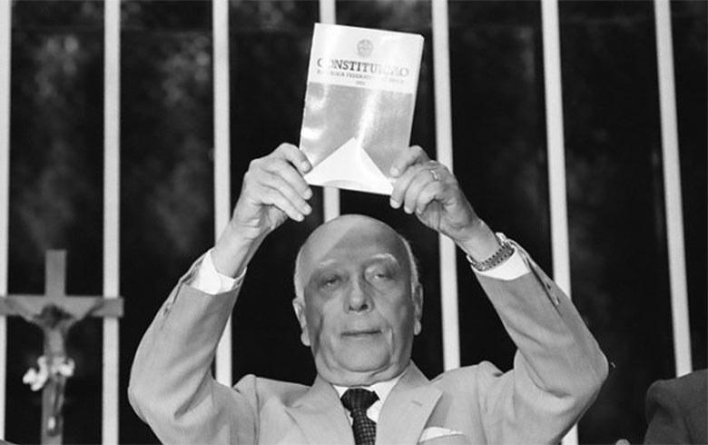

A Nova República

A Nova República é o período da história política do Brasil que começou com a redemocratização do país após o fim da Ditadura Cívico-Militar, em 1985, e se estende até o presente. Essa fase é marcada pela restauração da democracia e pela implementação de instituições e práticas democráticas após 21 anos de regime autoritário.
O início da Nova República foi marcado pela eleição indireta de Tancredo Neves para a presidência, em 1985, substituindo o regime militar. Tancredo Neves, entretanto, faleceu antes de assumir o cargo, e seu vice, José Sarney, tornou-se presidente. Sarney presidiu o Brasil durante um período de transição e de grandes desafios econômicos, incluindo hiperinflação.
A Nova República viu a promulgação de uma nova Constituição em 1988, que estabeleceu uma série de direitos civis e sociais e reforçou a estrutura democrática do país. A Constituição de 1988 é frequentemente chamada de "Constituição Cidadã" devido ao seu enfoque na proteção dos direitos humanos e na promoção da cidadania.
Durante a Nova República, o Brasil passou por diferentes fases econômicas e políticas, incluindo crises financeiras, reformas econômicas e mudanças de governo. Destacam-se os impeachments dos presidentes Fernando Collor de Mello (1992) e Dilma Rousseff (2016), que refletiram tensões políticas e econômicas significativas.
O período também é caracterizado pelo avanço da participação popular e pela ampliação dos direitos e das políticas sociais, embora desafios como desigualdade, corrupção e instabilidade política continuem a ser questões importantes.